2014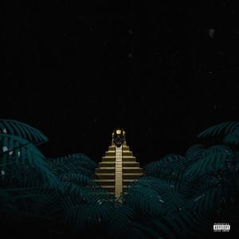2015
2014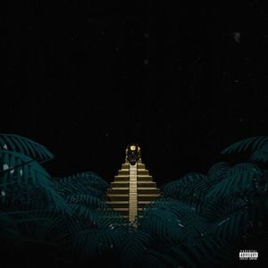2015
 2016
2016 2019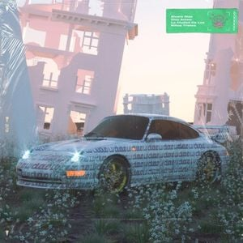2020
2019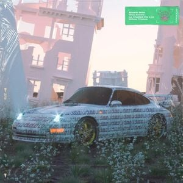2020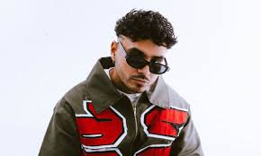
Jorge Álvaro Díaz Conocido como Álvaro Díaz y nacido en la isla de San Juan, Puerto Rico; es un joven publicista y rapero de 28 años de edad.
Comenzando desde chico su gusto por el Hip-Hop (el Rap en específico) Álvaro comienza su introducción a este género improvisando en pistas y grabando desde
tiempo atrás. Casi 10 años tuvieron que pasar para que el joven rapero viera plasmado su trabajo en la calle, menos de 3 años activo con el proyecto y la música
de Álvaro Díaz ya ha logrado posicionarse dentro del mercado latino, sonando fuertemente en lugares fuera de Puerto Rico, tales como México, España, Chile y demás.
Hace más de cuatro años Noisey lo llamó “el mejor rapero de Puerto Rico”, Complex lo describió como “el líder de la revolución del rap latino” en el 2016.
Hace algunos años catapultó su carrera desde México. Hace seis años estableció un puente con Homegrown Mafia e ingresó al mismo roster de Alemán, La
Banda Bastön, FNTXY, entre otros. Se comprometió de lleno con el avance del hip-hop mexicano y en el 2016 lideró la campaña “WHAT THE FUCK” con Alemán
con la intención impulsar la cultura entre el público general.
Unió su talento con Jesse Báez y MLKMN en Broke Kids, un colectivo lleno de talento.
Algo “duro” e “innovador” son los términos con los que Díaz cataloga su música, sin querer encasillarlo solo en el género Rap. Hasta ahora, Álvaro
cuenta con poco más de 20 temas con los cuales han tenido gran aceptación por el público en Puerto Rico, siendo que en este lugar es muy difícil
tratar de penetrar en el mercado de la música con este tipo de sonido, ya que lo que más suena en aquellos lugares es el reggaeton.
Algo que también llama mucho la atención en el trabajo de este boricua, es su videografía, pues cada uno de sus videoclips tienen la calidad y originalidad
que lo hacen distinto al resto de rapeos boricuas, muchos de ellos cuentan con homenajes a películas debido a su pasión por el cine.
2014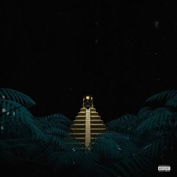2015
20162019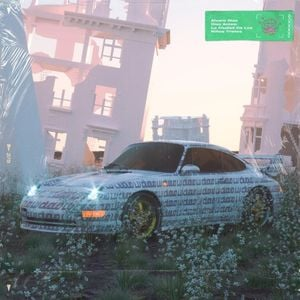2020
 2020
2020 2021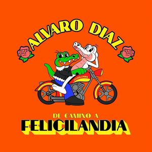2022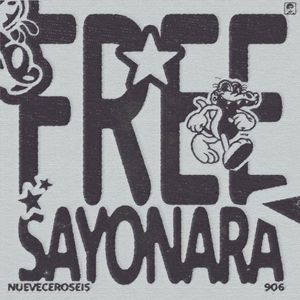2023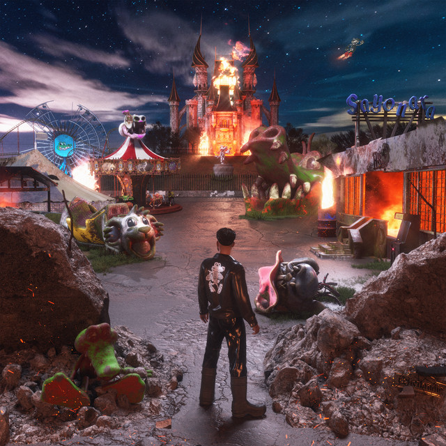2024
2021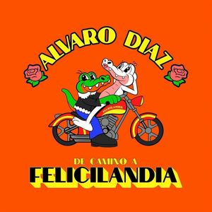2022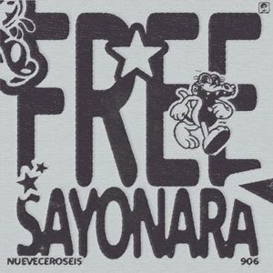2023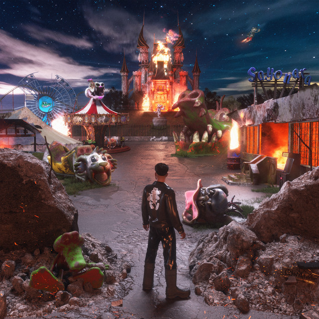2024